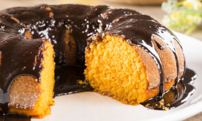
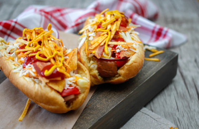

Listas de Receitas
Bolo de cenoura com cobertura de chocolate

Ingredientes
- Para o bolo:
- 3 cenouras médias
- 3 ovos
- 1 xícara de óleo
- 2 xícaras de açúcar
- 2 xícaras de farinha de trigo
- 1 colher de sopa de fermento em pó
- Para a cobertura de chocolate:
- 4 colheres de sopa de açúcar
- 4 colheres de sopa de chocolate em pó
- 2 colheres de sopa de manteiga
- 4 colheres de sopa de leite
Modo de preparo
- Para o bolo:
- Preaqueça o forno a 180°C. Unte uma forma média com manteiga e farinha.
- Descasque e corte as cenouras em pedaços pequenos.
- No liquidificador, bata as cenouras, os ovos e o óleo até obter uma mistura homogênea.
- Em uma tigela, misture o açúcar e a farinha de trigo.
- Adicione a mistura do liquidificador à tigela com o açúcar e a farinha. Mexa bem até obter uma massa homogênea.
- Por último, adicione o fermento em pó e misture delicadamente.
- Despeje a massa na forma untada e leve ao forno preaquecido por aproximadamente 40 minutos, ou até que um palito inserido no centro saia limpo.
- Retire do forno e deixe esfriar antes de desenformar e aplicar a cobertura.
- Para a cobertura de chocolate:
- Em uma panela, misture o açúcar, o chocolate em pó, a manteiga e o leite.
- Leve ao fogo baixo, mexendo sempre, até obter uma calda cremosa. Não deixe ferver.
- Despeje a cobertura ainda quente sobre o bolo já desenformado e frio.
- Deixe a cobertura esfriar e solidificar antes de cortar o bolo em pedaços e servir.
Este bolo de cenoura com cobertura de chocolate é uma delícia! Espero que goste!
Cachorro-quente

Ingredientes
- 4 salsichas
- 4 pães para cachorro-quente
- Mostarda
- Ketchup
- Maionese
- Molho de pimenta (opcional)
- Batata palha (opcional)
- 1 cebola pequena (opcional)
- Azeite de oliva (opcional)
- Sal e pimenta a gosto
Modo de preparo
- Preparando as salsichas:
- Em uma panela média, coloque água suficiente para cobrir as salsichas.
- Adicione as salsichas e deixe ferver por cerca de 5-7 minutos, ou até que estejam cozidas.
- Uma opção é grelhar as salsichas em uma frigideira ou churrasqueira até ficarem douradas.
- Preparando a cebola (opcional):
- Se desejar, pique a cebola em cubos pequenos.
- Em uma frigideira, aqueça um pouco de azeite.
- Refogue a cebola picada até que fique transparente e levemente dourada.
- Reserve.
- Montando o Cachorro-quente:
- Abra os pães para cachorro-quente.
- Coloque uma camada de maionese em um lado do pão e mostarda no outro lado.
- Adicione ketchup a gosto sobre a maionese.
- Coloque a salsicha cozida no meio do pão.
- Adicionando os ingredientes extras (opcional):
- Se desejar, adicione a cebola refogada por cima da salsicha.
- Para um toque especial, coloque um pouco de molho de pimenta por cima da cebola.
- Finalizando:
- Se quiser, adicione batata palha por cima de tudo para dar uma textura crocante.
- Feche o pão e o cachorro-quente está pronto para servir!
Você pode acompanhar este cachorro-quente com batatas fritas, salada ou apenas saborear por si só. Espero que goste desta versão simples e deliciosa!